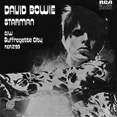
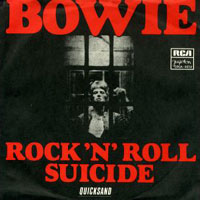
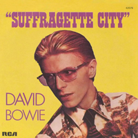

As with the Hunky Dory album cover, the photo used for The Rise And Fall Of Ziggy Stardust And The Spiders From Mars was taken by Brian Ward and later coloured in by Terry Pastor and George Underwood. But where Bowie's Hunky Dory pose found him mimicking old-Hollywood glamour, the Ziggy Stardust album cover would turn him into an icon in his own right, immediately marking itself out as one of the best David Bowie album covers of all time. Aiming for a cross between William S Burroughs' 1971 novel, The Wild Boys: A Book Of The Dead, and Stanley Kubrick's adaptation of A Clockwork Orange, Bowie once claimed that "everything had to be infinitely symbolic". While the colouring gives the extraterrestrial rock messiah an otherworldly appearance, fans were all too eager to read their own meanings into the image: the "K West" sign, actually indicating a place of business for the furriers of the same name (then situated at 23 Heddon Street, off London's Regent Street, where a flu-ridden Bowie posed for the shot), was often interpreted as a coded declaration that Bowie had set out on a "quest" of his own. A more direct instruction appeared on the rear sleeve: "TO BE PLAYED AT MAXIMUM VOLUME".
Photographer: Brian Ward | Illustrators: Terry Pastor, George Underwood
FIVE YEARS
Pushing through the market square
so many mothers sighing (sighing)
News had just come over
we had five years left to cry in
News-guy wept and told us
earth was really dying (dying)
Cried so much his face was wet
then I knew he was not lying (lying)
I heard telephones, opera house, favourite melodies
I saw boys, toys, electric irons and TVs
My brain hurt like a warehouse
it had no room to spare
I had to cram so many things
to store everything in there
And all the fat-skinny people,
and all the tall-short people
And all the nobody people,
and all the somebody people
I never thought I'd need so many people
A girl my age went off her head
hit some tiny children
If the black hadn't a-pulled her off,
I think she would have killed them
A soldier with a broken arm,
fixed his stare to the wheels of a Cadillac
A cop knelt and kissed the feet of a priest
and a queer threw up at the sight of that
I think I saw you in an ice-cream parlour
drinking milk shakes cold and long
Smiling and waving and looking so fine
don't think you knew you were in this song
And it was cold and it rained so I felt like an actor
And I thought of Ma and I wanted to get back there
Your face, your race, the way that you talk
I kiss you, you're beautiful, I want you to walk
We've got five years, stuck on my eyes
We've got five years, what a surprise
We've got five years, my brain hurts a lot
We've got five years, that's all we've got
We've got five years, what a surprise
We've got five years, stuck on my eyes
We've got five years, my brain hurts a lot
We've got five years, that's all we've got
SOUL LOVE
Stone love - she kneels before the grave
A brave son - who gave his life to save the slogan
That hovers between the headstone and her eyes
For they penetrate her grieving
New love - a boy and girl are talking
New words - that only they can share in
New words - a love so strong it tears their hearts
To sleep - through the fleeting hours of morning
[CHORUS]
Love is careless in its choosing
Sweeping over cross a baby
Love descends on those defenceless
Idiot love will spark the fusion
Inspirations have I none
Just to touch the flaming dove
All I have is my love of love
And love is not loving
Soul love - the priest that tastes the word and
Told of love - and how my God on high is
All love - though reaching up my loneliness evolves
By the blindness that surrounds him
[CHORUS]
MOONAGE DAYDREAM
I'm an alligator, I'm a mama-papa coming for you
I'm the space invader,
I'll be a rock 'n' rollin' bitch for you
Keep your mouth shut,
You're squawking like a pink monkey bird
And I'm busting up my brains for the words
[CHORUS]
Keep your 'lectric eye on me babe
Put your ray gun to my head
Press your space face close to mine, love
Freak out in a moonage daydream, oh yeah!
Don't fake it baby, lay the real thing on me
The church of man, love
Is such a holy place to be
Make me baby, make me know you really care
Make me jump into the air
[CHORUS x3]
Freak out, far out, in out
STARMAN
Didn't know what time it was and the lights were low
I leaned back on my radio
Some cat was layin' down some rock 'n' roll,
'lotta soul, he said
Then the loud sound did seem to fade
Came back like a slow voice on a wave of phase
That weren't no D.J. that was hazy cosmic jive
[CHORUS]
There's a Starman waiting in the sky
He'd like to come and meet us
But he thinks he'd blow our minds
There's a Starman waiting in the sky
He's told us not to blow it
Cause he knows it's all worthwhile
He told me:
Let the children lose it
Let the children use it
Let all the children boogie
I had to phone someone so I picked on you
Hey, that's far out, so you heard him too!
Switch on the TV we may pick him up on Channel Two
Look out your window I can see his light
If we can sparkle he may land tonight
Don't tell your poppa or he'll get us locked up in fright
[CHORUS x2]
La, la, la, la, la, la, la, la
IT AIN'T EASY
When you climb to the top of the mountain
Look out over the sea
Think about the places perhaps,
where a young man could be
Then you jump back down to the rooftops
Look out over the town
Think about all of the strange things circulating round
[CHORUS]
It ain't easy, it ain't easy
It ain't easy to get to heaven when you're going down
Well all the people have got their problems
That ain't nothing new
With the help of the good Lord
We can all pull on through
We can all pull on through
Get there in the end
Sometimes it'll take you right up
And sometimes down again
[CHORUS]
Satisfaction, satisfaction
Keep me satisfied
I've got the love of a Hoochie Koochie woman
She calling from inside
She's a-calling from inside
Trying to get to you
All the woman really wants
You can give her something too
[CHORUS x2]
LADY STARDUST
People stared at the makeup on his face
Laughed at his long black hair, his animal grace
The boy in the bright blue jeans
Jumped up on the stage
And Lady Stardust sang his songs
Of darkness and disgrace
[CHORUS]
And he was alright, the band was altogether
Yes he was alright, the song went on forever
And he was awful nice
Really quite out of sight
(second and third time: really quite paradise)
And he sang all night long
Femme fatales emerged from shadows
To watch this creature fair
Boys stood upon their chairs
To make their point of view
I smiled sadly for a love I could not obey
Lady Stardust sang his songs
Of darkness and dismay
[CHORUS]
Oh how I sighed
When they asked if I knew his name
[CHORUS]
Get some pussy now!
STAR
Tony went to fight in Belfast
Rudi stayed at home to starve
I could make it all worthwhile
As a rock 'n' roll star
Bevan tried to change the nation
Sonny wants to turn the world,
Well he can tell you that he tried
[CHORUS x2]
I could make a transformation as a rock 'n' roll star
So inviting - so enticing to play the part
I could play the wild mutation
as a rock 'n' roll star
I could do with the money
I'm so wiped out with things as they are
I'd send my photograph to my honey -
And I'd c'mon like a regular superstar
I could fall asleep at night
As a rock 'n' roll star
I could fall in love all right
As a rock & roll star
Just watch me now!
HANG ON TO YOURSELF
Well she's a tongue twisting storm,
She will come to the show tonight
Praying to the light machine
She wants my honey not my money
she's a funky-thigh collector
Layin' on 'lectric dreams
[CHORUS]
So come on, come on
We've really got a good thing going
Well come on, well come on
If you think we're gonna make it
You better hang on to yourself
We can't dance, we don't talk much
We just ball and play
But then we move like tigers on vaseline
Well the bitter comes out better on a stolen guitar
You're the blessed, we're the Spiders from Mars
[CHORUS x3]
Come on, ah, come on, ah [repeat]
ZIGGY STARDUST
Ziggy played guitar, jamming good with Weird and Gilly
And the Spiders from Mars
He played it left hand, but made it too far
Became the special man
Then we were Ziggy's Band
Ziggy really sang, screwed up eyes
and screwed down hairdo
Like some cat from Japan, he could lick 'em by smiling
He could leave 'em to hang
Here came on so loaded man
Well hung and snow white tan
So where were the spiders
While the fly tried to break our balls?
Just the beer light to guide us
So we bitched about his fans
and should we crush his sweet hands?
Ziggy played for time, jiving us that we were Voodoo
The kids was just crass
He was the naz
With God given ass
He took it all too far
But boy could he play guitar
Making love with his ego
Ziggy sucked up into his mind
Like a leper messiah
When the kids had killed the man
I had to break up the band
Oh yeah
Ziggy played guitar
SUFFRAGETTE CITY
Hey man, oh leave me alone you know
Hey man, oh Henry, get off the phone, I gotta
Hey man, I gotta straighten my face
This mellow thighed chick
Just put my spine out of place
Hey man, my schooldays insane
Hey man, my work's down the drain
Hey man, well she's a total blam-blam
She said she had to squeeze it but she... then she...
[CHORUS]
Oh don't lean on me man
Cause you can't afford the ticket
I'm back on Suffragette City
Oh don't lean on me man
Cause you ain't got time to check it
You know my Suffragette City
Is outta sight... she's all right
Hey man, Henry, don't be unkind, go away
Hey man, I can't take you this time, no way
Hey man, droogie don't crash here
There's only room for one and here she comes
Here she comes
[CHORUS]
A Suffragette City, a Suffragette City
I'm back on Suffragette City [x2]
Suffragette City
Oohh, Wham Bam Thank You Ma'am!
Suffragette City [ad lib]
ROCK 'N' ROLL SUICIDE
Time takes a cigarette, puts it in your mouth
You pull on your finger, then another finger, then your cigarette
The wall-to-wall is calling, it lingers, then you forget
Ohhh, you're a rock 'n' roll suicide
You're too old to lose it, too young to choose it
And the clock waits so patiently on your song
You walk past a cafe
But you don't eat when you've lived too long
Oh, no, no, no, you're a rock 'n' roll suicide
Chev brakes are snarling as you stumble across the road
But the day breaks instead so you hurry home
Don't let the sun blast your shadow
Don't let the milk float ride your mind
You're so natural - religiously unkind
Oh no love! you're not alone
You're watching yourself but you're too unfair
You got your head all tangled up
But if I could only make you care
Oh no love! you're not alone
No matter what or who you've been
No matter when or where you've seen
All the knives seem to lacerate your brain
I've had my share, I'll help you with the pain
You're not alone
Just turn on with me and you're not alone
Let's turn on with me and you're not alone
Let's turn on and be not alone
Gimme your hands cause you're wonderful [x2]
Oh gimme your hands
SINGLES


